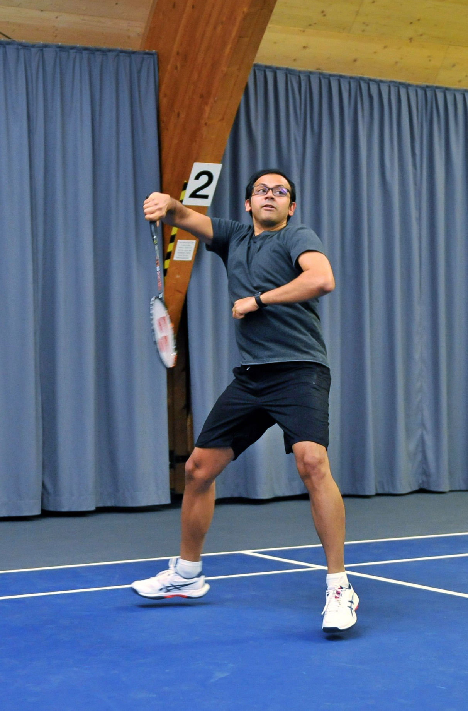

Data Engineer, Data Architect & AI Student. Building scalable data platforms & AI-driven solutions at the intersection of engineering and innovation.
I'm a Data Engineer, Data Architect & AI Student based in Switzerland, currently at Sonova AG, where I design and build enterprise data platforms that power post-market surveillance, quality monitoring, and analytics at scale.
With over a decade of experience spanning India, Poland, and Switzerland, I've delivered data solutions for global brands including Nike, Bayer, Reckitt, Volvo, and Sonova. My expertise lies in architecting end-to-end data pipelines, lakehouse architectures, and cloud-native infrastructure on Microsoft Azure.
Currently pursuing an MSc in Engineering (Computer Science specialization) at ZHAW, I'm deepening my knowledge in AI, deep reinforcement learning, computer vision, and mobile computing — bridging the gap between data engineering and intelligent systems.
Enterprise-grade batch & real-time data processing architectures
Azure, Terraform, Kubernetes, CI/CD pipelines
Deep RL, Computer Vision, NLP — exploring the frontier
Academic research at ZHAW Centre for Artificial Intelligence
Technical Specialization Project · ZHAW Centre for Artificial Intelligence · 2025–2026
Current research project focused on developing robust AI-driven sensor fusion techniques to detect and track flying objects in challenging weather conditions. Developing algorithms to integrate data from multiple sensor sources to ensure high reliability in visibility-limited environments like fog, rain, and snow.
Technical Specialization Project · DIZH Innovation Project · UZH & ZHAW · 2025–2028
Contributed data engineering and document analysis work as part of a DIZH-funded research project led by Prof. Jasmina Bogojeska (ZHAW). Investigated the reliability of multimodal LLMs in extracting structured data from scientific PDFs.
Academic & personal projects from my MSc at ZHAW
IoT medication adherence tracker with BLE-connected Arduino sensors and an Android companion app built with Jetpack Compose.
Proximal Policy Optimization agent trained to race in the OpenAI Gym CarRacing-v2 environment using deep reinforcement learning.
Computer vision pipeline for detecting and anonymizing license plates in images using deep learning.
Handwritten digit classification using convolutional neural networks on the MNIST dataset.
Heuristic algorithm for solving the Capacitated Vehicle Routing Problem with optimized route planning.
LLM-powered pipeline to transcribe and summarize university lectures using Whisper and large language models.
ZHAW — Centre for Artificial Intelligence
Specialization in Computer Science
Expected 2027University of Mumbai
Computer Engineering
2012Microsoft Certified
2021Microsoft Certified
2020Meta (Facebook)
2012When I'm not building data platforms, you'll find me on the court or in the mountains

Competitive badminton keeps me sharp.
Exploring the Swiss Alps.